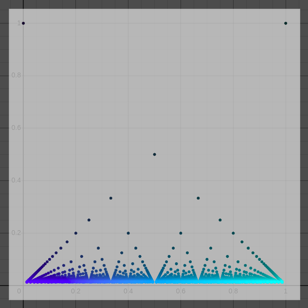

Thomae's function is a common function presented in introductory analysis courses which challenges students' intuition of what it means to be continuous.

How could we visualize Thomae's Popcorn Function? The key idea is to enumerate as many rationals as is reasonable. Our technique to achieve this is encapsulated in lines 6-10.We start in line 6 by using list comprehension to eunmerate all ordered pairs \((i, j)\) with \(i\) non-negative, and \(j\) positive, and both \(i, j\) bounded above by some \(N\).
Line 7 defines a function which takes a point and returns the GCD of its two components.
In line 8, we make use of Desmos's logical indexing. \(P_0[g(P_0) = 1]\) is a sub-list of \(P_0\) consisting of all elements \(p \in P_0\) such that \(g(p) = 1\). In other words, we extract from \(P_0\) all elements whose components have GCD equal to 1.
In a similar fashion, line 9 simply extracts from \(Q_0\) the elements whose \(x\) coordinate (numerator) is at most its \(y\) coordinate (denominator). This serves to restrict our rationals to \([0, 1]\).
Finally, in line 10, we render a graph of our function by enumerating all points of the form \(\left( \frac{r}{s}, \frac{1}{s}\right)\) for rationals \(\frac{r}{s}\) with \(\text{GCD}(r, s) = 1\).
The remaining lines serve only aesthetic purposes.